For all the area functions. Be aware of the units. If you enter measurement in cm, the result will be cm^2 - etc.
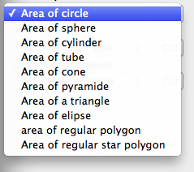
Area of circle:
circleArea(x )
Where
x = diameter
Formula:
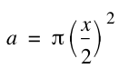
Example:
What is the area of an circle with the diameter of 55 cm.
circleArea(55)=2375.829445 cm^2
-----------------
Next function is area of an sphere (ball):
sphereArea(x )
Where
x = outher diameter
Formula:
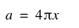
Example:
A ball with a diameter of 20 cm, what is the area:
sphereArea(20)=251.3274124
---------------------
The next function is area of cylinder: Where
x = outher diameter
y = length
Using the following formulas
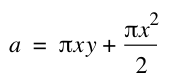
Example:
An cylinder, 10 cm diameter, 20 cm length:
areaCyl(10;20)=785.3981635
---------------------
The next function is for hollow cylinder or tube. The calculation includes the area of the ends.
areaHollowCyl(x; y; z )
Where
x = outher diameter
y = wall tichness
z = length
Using the following formula:
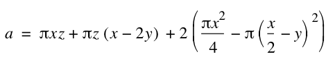
Example:
A tube, 100 cm long, 10 cm diameter, and the wall tichness is 1 cm. What is the area ?
areaHollowCyl(10;1;100)=5711.415445
--------------------The next function is for the area of a cone or truncated cone. This function can calculate both regular cone, and truncated cone. If the cone is regular, enter 0 as the top diameter.
areaCone(x; y; z )
Where
x = bottom diameter
y = top diameter (=0)
z = hight
Using the following formulas: "h" is the calculation of the missing height of the part of the cone that is truncated.
The second formula calculate the area of the slant surface of the part that is missing if truncated. This will result in zero if the top diameter (y) is zero.
The third formula calculates in the two first parts, the area of the bottom and top ends, and then the area of the slant surface (using phytagoras to calculate the slant height). Finally we subtract w, as the area of the truncated part.
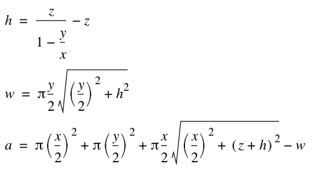
Example:
A truncated cone, with bottom diameter 10 cm, top diameter 8 cm, and 4 cm tick:
areaCone(10;8;4)=452.6332575 cm^2
-----------------The next function is the area of an pyramide: We supose this is a pyramide with a quadratic square as base.
areaPyramide(x; y )
Where
x = length of one side of square
y = height from center of base to top
Using the following formula:
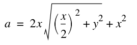
Example:
A pyramide with a 10x10 cm square as base, and 20 cm height.
areaPyramide(10;20)=512.3105626 cm^2
--------------------
The next function is for the area of a triange (any combination of angles. Any sum of two sides must be longer than the third for being a triangle.
areaTriangle(x; y; z )
Where
x = length first side
y = length of second side
z = length of third side
Using the following formulas (Herons formula):
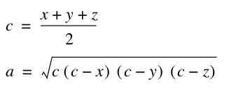
Example:
areaTriangle(10;12;15)=59.81168364
---------------------------
The next function is for the area of an elipse:
areaElipse(x; y )
Where
x = width
y = height
Using the following formula:
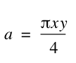
Example:
areaElipse(15;20)=235.619449
---------------------------------
The next function is for calculating the area of a regular polygon.
areaRegPolygon(x; y )
Where
x = number of sides
y = distance from center to one of its corners
Using the following formulas:
The first formula calculates the half angle of the corners. The idea is to make x number of triangles where all triangle tops meet in the center. The next formula calculate the area if one triangle multiplied by the number of sides.
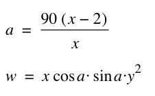
Example:
A pentagon with the length from the center to one angle, is 15 cm. What is the area:
areaRegPolygon(5;15)=534.9692903
------------------------------
The next - and last in this serie, is area of a regular star polygon. A regular star polygon, is a polygon that have a inner regular polygon, where the lines is extended so they meet each other. A pentagram is an example of this. It is not, any symetrical star, it has to be as described for this function to work.
areaRegStarPolygon(x; y )
Where
x = number of sides
y = distance from center to one of its inner corners
Using the following formulas:
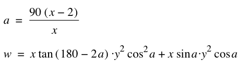
We calculate the triangles that extends from the inner polygon, and then the area of the inner polygon itself.
Example:
areaRegStarPolygon(5;15)=1731.196989
----------------------------------
This was the last object in this serie of area of objects. The next serie is the volume of objects